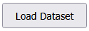

Date: 14 April 2024
Project: Biodiversity Genomics Europe – WP10: T10.1 Reference Library Curation

This standalone Library Curation Tool allows taxonomic experts to curate sequence records to build a European animal species reference library as part of the EU-Horizon Biodiversity Genomics Europe project.
curation_tool_windows.zip.C:\curation_tool_windows).ProjectFolder/ ├── data/ # input data files (db or xml format) ├── logs/ # log file for changed data (changes.log) ├── node/ # portable Node.js runtime ├── node_modules/ # dependencies installed via npm ├── public/ # frontend interface for the tool ├── package.json # project metadata and dependencies ├── README.md # project documentation ├── server.js # backend logic └── start_tool.bat # starts the tool
data/ before starting. If only an .xml file is present, a .db file will be generated automatically.
data/ , logs/ and changes.log
start_tool.bat.When the tool is launched, you'll see the following:
| Button / Field | Function |
|---|---|
| Filter | |
| |
| Control Panel | |
| Filters the records based on your selected criteria and displays the results. / Refreshes the HTML-table | |
| Toggles the visibility of rows marked with a red background (Status = invalid record or exclude species) | |
|  | To switch datasets: Select one from the dropdown, click Switch Dataset, confirm the popup with OK, then click Apply Filter to view the new dataset (in this case Alucitidae) |
| Stop the server running in the backend. Use this only if you want to end the Library Curation Tool. | |
| Click on the red question mark in order to open a context menu with supporting information. | |
| Adjust records shown on page. | |
| Additional search field. Search the whole table over all columns and lines. | |
| HTML table | |
| Ranking:
Ranking system to pick representatives for each haplotype / species Show ranking scheme by clicking on the red question mark beside column Ranking in the HTML table | |
 | BAGS: Barcode, Audit & Grade System
|
| BIN Info: Dynamically shows BIN-sharing and BIN-splitting events for the corresponding record and lists with which species BINs are shared and/or the BINs belonging to this/these species. If you exclude records or species the values will be recalculated. | |
| Direct link to the corresponding record on https://portal.boldsystems.org. | |
| Status - dropdown: Mark records as valid or invalid and exclude species or reinclude species (a popup window will open and ask you if you are sure that you want to remove this species).Save changes by pressing the Submit button. Press the Apply Filter button to refresh the HTML-table and see the changes. Records marked as valid appear green and such marked as invalid in red and will be hidden. The number of BINs and records in the Statistics Panel is adjusted accordingly. Press the Show/Hide Invalid Records button to show them again (maybe you have to press the button several times to see a result). | |
| Reason name correction - dropdown: select a reason from the dropdown, if you correct a species name: misidentified or no selection allows the correction of the species name for a single row synonym and typo will correct the species name for the whole selected species | |
| Correct species name: In case of misidentification, typo, synonym, etc. you can correct the species name here. | |
| Action: At the end of each line. Press this to save all changes you made to this line. | |
| At the end of the page. Press this to save all changes you made on this page (alternative to Submit in case of changes to multiple lines. | |
| Curator_notes: Free text field for your annotations. |
changes.log file to the coordination team after you finished curation!!!.xml or .db files are stored in the subfolder data/.db filelogs/changes.log tracks all changesClick Stop Curation Tool. Then close both the browser and terminal windows.
start_tool.bat is used.data/ folder contains .xml or .db.Navigate to http://localhost:3000.
changes.log file to the coordination team after curation.